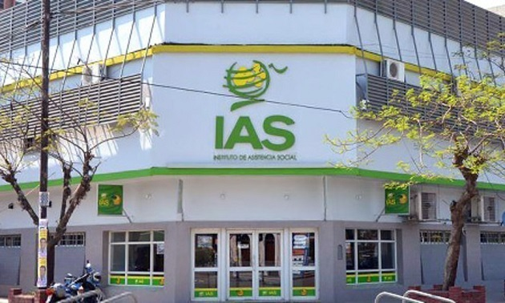

Bienvenido
¿Qué es el IAS?
El Instituto de Asistencia Social (IAS) es el organismo oficial de la Provincia de Formosa responsable de la regulación, administración y control de todos los juegos de azar y actividades lúdicas legales en el territorio provincial.
El objetivo principal del Instituto no es solo fiscalizar las apuestas, sino garantizar que los recursos generados por esta actividad se transformen en beneficios directos para los formoseños.
¿Cuáles son sus funciones principales?
-
Acción Social y Salud:
Los fondos recaudados se destinan al financiamiento de programas de asistencia social, equipamiento de hospitales, insumos médicos y apoyo a establecimientos educativos.
-
Transparencia y Control:
El organismo asegura que todos los sorteos y juegos oficiales se realicen bajo estrictas normas de legalidad, combatiendo el juego clandestino para proteger al apostador.
-
Promoción del Juego Responsable:
Se implementan políticas de prevención y asistencia para que el azar sea exclusivamente una forma de entretenimiento sano, evitando conductas de riesgo o adictivas.
